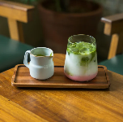

Mango Matcha
by Nami

Mango matcha is a modern fusion beverage that combines ceremonial-grade matcha, a finely ground Japanese green tea, with sweet mango purée or syrup. Key ingredients: Ceremonial grade matcha powder, fresh mango puree, milk, water, ice.